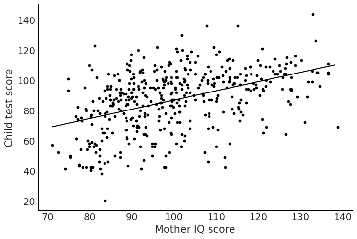
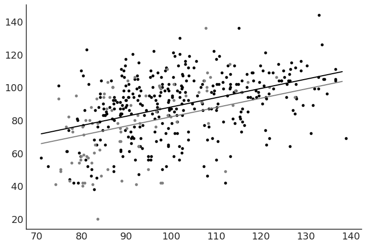
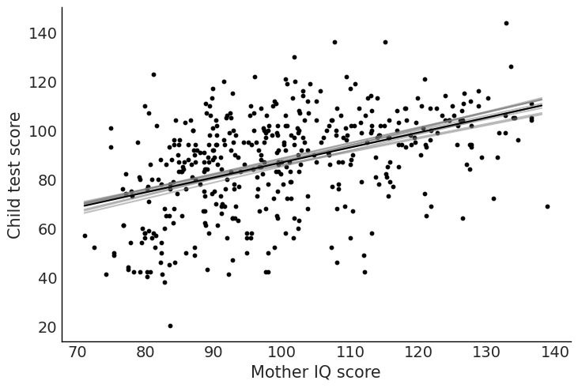

kidiq = pd.read_csv(DATA_PATH / "kidiq.csv")
kidiq.head()| kid_score | mom_hs | mom_iq | mom_work | mom_age | |
|---|---|---|---|---|---|
| 0 | 65 | 1 | 121.117529 | 4 | 27 |
| 1 | 98 | 1 | 89.361882 | 4 | 25 |
| 2 | 85 | 1 | 115.443165 | 4 | 27 |
| 3 | 83 | 1 | 99.449639 | 3 | 25 |
| 4 | 115 | 1 | 92.745710 | 4 | 27 |
Nov 11th, 2021
from pathlib import Path
import arviz as az
import bambi as bmb
import matplotlib.pyplot as plt
import numpy as np
import pandas as pd
DATA_PATH = Path("../data")rng = np.random.default_rng(seed=12)
az.style.use("arviz-white")kidiq = pd.read_csv(DATA_PATH / "kidiq.csv")
kidiq.head()| kid_score | mom_hs | mom_iq | mom_work | mom_age | |
|---|---|---|---|---|---|
| 0 | 65 | 1 | 121.117529 | 4 | 27 |
| 1 | 98 | 1 | 89.361882 | 4 | 25 |
| 2 | 85 | 1 | 115.443165 | 4 | 27 |
| 3 | 83 | 1 | 99.449639 | 3 | 25 |
| 4 | 115 | 1 | 92.745710 | 4 | 27 |
model_1 = bmb.Model("kid_score ~ mom_hs", data=kidiq)
idata_1 = model_1.fit()
az.summary(idata_1, kind="stats")| mean | sd | hdi_3% | hdi_97% | |
|---|---|---|---|---|
| Intercept | 77.552 | 2.130 | 73.627 | 81.545 |
| mom_hs | 11.791 | 2.371 | 7.309 | 16.157 |
| kid_score_sigma | 19.886 | 0.676 | 18.673 | 21.184 |
model_2 = bmb.Model("kid_score ~ mom_iq", data=kidiq)
idata_2 = model_2.fit()
az.summary(idata_2, kind="stats")| mean | sd | hdi_3% | hdi_97% | |
|---|---|---|---|---|
| Intercept | 25.646 | 5.921 | 15.310 | 37.783 |
| mom_iq | 0.612 | 0.059 | 0.504 | 0.727 |
| kid_score_sigma | 18.312 | 0.627 | 17.109 | 19.448 |
stats_2 = az.summary(idata_2, kind="stats")["mean"]
x = np.arange(kidiq["mom_iq"].min(), kidiq["mom_iq"].max())
y_pred = stats_2["Intercept"] + stats_2["mom_iq"] * x
fig, ax = plt.subplots()
ax.scatter("mom_iq", "kid_score", data=kidiq, color="black", s=10)
ax.set_xlabel("Mother IQ score")
ax.set_ylabel("Child test score")
ax.plot(x, y_pred, color="black")
model_3 = bmb.Model("kid_score ~ mom_hs + mom_iq", data=kidiq)
idata_3 = model_3.fit()
az.summary(idata_3, kind="stats")| mean | sd | hdi_3% | hdi_97% | |
|---|---|---|---|---|
| Intercept | 25.678 | 5.946 | 14.861 | 37.316 |
| mom_hs | 5.950 | 2.201 | 1.996 | 10.288 |
| mom_iq | 0.564 | 0.061 | 0.449 | 0.676 |
| kid_score_sigma | 18.161 | 0.624 | 17.068 | 19.377 |
stats_3 = az.summary(idata_3, kind="stats")["mean"]
x = np.arange(kidiq["mom_iq"].min(), kidiq["mom_iq"].max())
y_pred_mom_hs_1 = stats_3["Intercept"] + stats_3["mom_hs"] + stats_3["mom_iq"] * x
y_pred_mom_hs_0 = stats_3["Intercept"] + stats_3["mom_iq"] * x
fig, ax = plt.subplots()
ax.scatter("mom_iq", "kid_score", data=kidiq.query("mom_hs == 1"), color="black", s=10)
ax.scatter("mom_iq", "kid_score", data=kidiq.query("mom_hs == 0"), color="gray", s=10)
ax.plot(x, y_pred_mom_hs_1, color="black")
ax.plot(x, y_pred_mom_hs_0, color="gray")
model_4 = bmb.Model("kid_score ~ mom_hs + mom_iq + mom_hs:mom_iq", data=kidiq)
idata_4 = model_4.fit()
az.summary(idata_4, kind="stats")| mean | sd | hdi_3% | hdi_97% | |
|---|---|---|---|---|
| Intercept | -9.671 | 13.954 | -35.952 | 16.048 |
| mom_hs | 49.183 | 15.520 | 21.813 | 79.798 |
| mom_iq | 0.949 | 0.151 | 0.665 | 1.227 |
| mom_hs:mom_iq | -0.462 | 0.164 | -0.764 | -0.154 |
| kid_score_sigma | 18.000 | 0.617 | 16.815 | 19.118 |
stats_4 = az.summary(idata_4, kind="stats")["mean"]
x = np.arange(kidiq["mom_iq"].min(), kidiq["mom_iq"].max())
y_pred_mom_hs_1 = (
stats_4["Intercept"]
+ stats_4["mom_hs"]
+ (stats_4["mom_hs:mom_iq"] + stats_4["mom_iq"]) * x
)
y_pred_mom_hs_0 = stats_4["Intercept"] + stats_4["mom_iq"] * x
fig, ax = plt.subplots()
ax.scatter("mom_iq", "kid_score", data=kidiq.query("mom_hs == 1"), color="black", s=10)
ax.scatter("mom_iq", "kid_score", data=kidiq.query("mom_hs == 0"), color="gray", s=10)
ax.plot(x, y_pred_mom_hs_1, color="black")
ax.plot(x, y_pred_mom_hs_0, color="gray");index = rng.choice(len(idata_2.posterior["draw"].values), 10)
intercept_sample = idata_2.posterior["Intercept"][0, index].values
slope_sample = idata_2.posterior["mom_iq"][0, index].values
x = np.arange(kidiq["mom_iq"].min(), kidiq["mom_iq"].max())
y_pred = (
idata_2.posterior["Intercept"].values.mean()
+ idata_2.posterior["mom_iq"].values.mean() * x
)
fig, ax = plt.subplots()
ax.scatter("mom_iq", "kid_score", data=kidiq, color="black", s=10)
for intercept, slope in zip(intercept_sample, slope_sample):
ax.plot(x, intercept + slope * x, color="gray", alpha=0.5)
ax.plot(x, y_pred, color="black")
ax.set_xlabel("Mother IQ score")
ax.set_ylabel("Child test score");
# TODO: add plot code herekidiq["c_mom_hs"] = kidiq["mom_hs"] - kidiq["mom_hs"].mean()
kidiq["c_mom_iq"] = kidiq["mom_iq"] - kidiq["mom_iq"].mean()
model_4c = bmb.Model(
"kid_score ~ c_mom_hs + c_mom_iq + c_mom_hs:c_mom_iq",
data=kidiq,
)
idata_4c = model_4c.fit()
az.summary(idata_4c)| mean | sd | hdi_3% | hdi_97% | mcse_mean | mcse_sd | ess_bulk | ess_tail | r_hat | |
|---|---|---|---|---|---|---|---|---|---|
| Intercept | 87.640 | 0.912 | 85.894 | 89.346 | 0.014 | 0.010 | 4003.0 | 3038.0 | 1.0 |
| c_mom_hs | 2.755 | 2.368 | -1.498 | 7.267 | 0.040 | 0.029 | 3415.0 | 2573.0 | 1.0 |
| c_mom_iq | 0.590 | 0.061 | 0.479 | 0.705 | 0.001 | 0.001 | 4810.0 | 3095.0 | 1.0 |
| c_mom_hs:c_mom_iq | -0.485 | 0.159 | -0.772 | -0.175 | 0.002 | 0.002 | 4816.0 | 3545.0 | 1.0 |
| kid_score_sigma | 18.002 | 0.605 | 16.930 | 19.136 | 0.008 | 0.006 | 5254.0 | 3572.0 | 1.0 |
kidiq["c2_mom_hs"] = kidiq["mom_hs"] - 0.5
kidiq["c2_mom_iq"] = kidiq["mom_iq"] - 100
model_4c2 = bmb.Model(
"kid_score ~ c2_mom_hs + c2_mom_iq + c2_mom_hs:c2_mom_iq",
data=kidiq,
)
idata_4c2 = model_4c2.fit()
az.summary(idata_4c2)| mean | sd | hdi_3% | hdi_97% | mcse_mean | mcse_sd | ess_bulk | ess_tail | r_hat | |
|---|---|---|---|---|---|---|---|---|---|
| Intercept | 86.818 | 1.210 | 84.457 | 88.981 | 0.025 | 0.017 | 2387.0 | 2341.0 | 1.0 |
| c2_mom_hs | 2.883 | 2.386 | -1.652 | 7.248 | 0.049 | 0.035 | 2381.0 | 2572.0 | 1.0 |
| c2_mom_iq | 0.726 | 0.082 | 0.582 | 0.888 | 0.002 | 0.001 | 2074.0 | 2479.0 | 1.0 |
| c2_mom_hs:c2_mom_iq | -0.482 | 0.163 | -0.799 | -0.188 | 0.003 | 0.002 | 2172.0 | 2444.0 | 1.0 |
| kid_score_sigma | 18.000 | 0.619 | 16.896 | 19.269 | 0.010 | 0.007 | 3772.0 | 3164.0 | 1.0 |
kidiq["z_mom_hs"] = (kidiq["mom_hs"] - kidiq["mom_hs"].mean()) / (
2 * kidiq["mom_hs"].std()
)
kidiq["z_mom_iq"] = (kidiq["mom_iq"] - kidiq["mom_iq"].mean()) / (
2 * kidiq["mom_iq"].std()
)
model_4c = bmb.Model(
"kid_score ~ z_mom_hs + z_mom_iq + z_mom_hs:z_mom_iq",
data=kidiq,
)
idata_4c = model_4c.fit()
az.summary(idata_4c)| mean | sd | hdi_3% | hdi_97% | mcse_mean | mcse_sd | ess_bulk | ess_tail | r_hat | |
|---|---|---|---|---|---|---|---|---|---|
| Intercept | 87.648 | 0.937 | 85.868 | 89.388 | 0.012 | 0.009 | 6013.0 | 3314.0 | 1.0 |
| z_mom_hs | 2.299 | 2.018 | -1.590 | 6.002 | 0.034 | 0.025 | 3598.0 | 3456.0 | 1.0 |
| z_mom_iq | 17.676 | 1.846 | 14.433 | 21.301 | 0.027 | 0.019 | 4519.0 | 3154.0 | 1.0 |
| z_mom_hs:z_mom_iq | -12.069 | 3.996 | -19.596 | -4.583 | 0.064 | 0.047 | 3939.0 | 3062.0 | 1.0 |
| kid_score_sigma | 18.002 | 0.616 | 16.880 | 19.145 | 0.009 | 0.006 | 5097.0 | 3149.0 | 1.0 |
model_5 = bmb.Model("kid_score ~ C(mom_work)", data=kidiq)
idata_5 = model_5.fit()
az.summary(idata_5, kind="stats")| mean | sd | hdi_3% | hdi_97% | |
|---|---|---|---|---|
| Intercept | 81.994 | 2.292 | 77.896 | 86.441 |
| C(mom_work)[2] | 3.866 | 3.090 | -1.804 | 9.844 |
| C(mom_work)[3] | 11.504 | 3.561 | 4.844 | 18.084 |
| C(mom_work)[4] | 5.213 | 2.672 | -0.025 | 9.851 |
| kid_score_sigma | 20.289 | 0.696 | 19.009 | 21.646 |